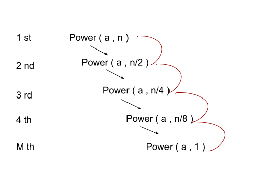

Recursion is the splitting of one big problem into smaller subproblems. It means that the solution can be derived or built from smaller subproblems.
For example, if we have to calculate the factorial of 4, then 4! = 4 * 3! Then 3! = 3 * 2! and so on. We can see that 4! has a subproblem having 3! which has a problem of 2! and so on.
Let's look at the code for the same :-
Output :- Factorial of 4 is being calculated
Factorial of 3 is being calculated
Factorial of 2 is being calculated
Factorial of 1 is being calculated
Factorial of 4 = 24
Here we can see that first fact(4) is running and then fact(3) and so on until the base condition is reached.
Factorial (4) = 4 * factorial(3)
Factorial (3) = 3 * factorial(2)
Factorial (2) = 2 * factorial(1)
Factorial (1) = 1 (Base Condition is reached)
Factorial (2) = 2
Factorial (3) = 3 * 2 = 6
Factorial (4) = 4 * 6 = 24
The recursive functions are pushed in a stack until the base condition is reached i.e. the recursive function is stopped. After the base condition is reached, the functions are popped from the stack and the value returned from the function popped is given to the function at the top of the stack.
When the stack is empty then the value obtained is returned to the calling function ( the function which initially called the recursive function, in this case it is the main function ).
Whenever we make a recursive function then we need a limiting condition that will tell us when to stop the recursion, this limiting condition is also known as base condition. If base condition is not declared in the recursive function will give TLE ( Time Limit Exceeded ) as the recursive function will run indefinitely.
The base condition in the above example is if ( n<=1 ) because the factorial of 1 and 0 is 1, and factorial is only valid for non negative numbers.
Due to the limiting size of the stack, we can only make a certain number of recursive calls, so the base condition should be reached before the time limit exceeds.
We can also calculate exponents of a number with the help of recursion :-
Output :- 125
Here the loop is running n times.
Time Complexity :- O(n).
Lets look another example where we calculate the exponent of a given number in O(log2n)
Time Complexity = O( log 2 n )
Here we can see that the recursive function runs for log2n because we are splitting the recursion from
n -> n/2 -> n/4 -> n/8 -> n/(2^(m))=1
Where n = (2^(m) )
Hence m = log 2 n and the code runs m times. Hence the complexity equals log 2 n.

The black arrows tell the function call and red arrows give the value returned.
Few algorithms are really complex if done via iteration so recursion is preferred.
Recursion saves a lot of code space.
Recursion takes up a lot of space as every function call enters a stack.
If the base condition is not set up correctly and within the limits then there are chances of the recursion running indefinitely.
Sometimes the recursion code is wrong and the function is run indefinitely so it is really hard to find the errors.
Happy Coding 😊
By Programmers Army
Contributed by: Tanmay Garg